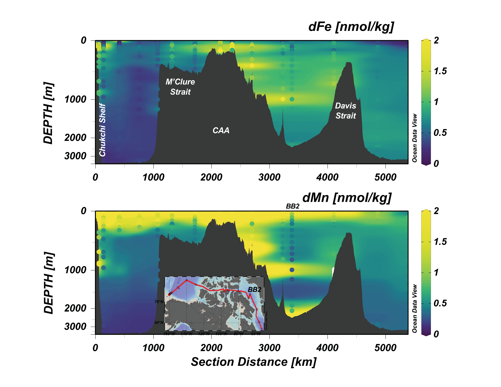

Shelf-basin connectivity drives dissolved Fe and Mn distributions in the western Arctic Ocean: A synoptic view into polar trace metal cycling

Abstract: There have been many changes over the past few decades in the physical environment and ecosystem health of the Arctic Ocean, which is a sentinel of global warming. Bioactive trace metal data of important micronutrients for algae across the global ocean, such as iron (Fe) and manganese (Mn), are key indicators of biogeochemical change. However, trace metal data in the Arctic have been historically sparse and generally confined to ice-free regions. In 2015, three major GEOTRACES expeditions sought to resolve trace metal distributions across the Arctic, covering the western, eastern, and Canadian Arctic sectors. The diverse Arctic shelves displayed unique controls on Fe and Mn cycling due to differing chemical, biological, and physical properties. Here, we contrast the shallow, reducing Chukchi Shelf in the western Arctic with the tidally forced, advective Canadian Arctic and the deeper, less productive Barents Shelf in the eastern Arctic. Reductive dissolution and physical resuspension both proved to be large sources of Fe and Mn to the Arctic and the North Atlantic outflow. In the isolated intermediate and deep waters, one-dimensional scavenging in the western and eastern Arctic contrasts with vertical biological signals in Baffin Bay and the Labrador Sea.
Manuel Colombo
Assistant Professor of Marine Science
Biogeochemistry Across Boundaries // VIMS and W&M